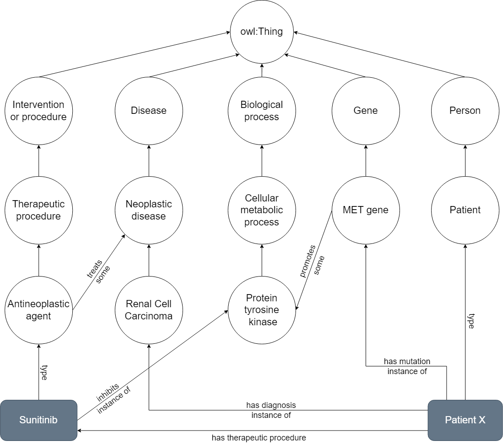
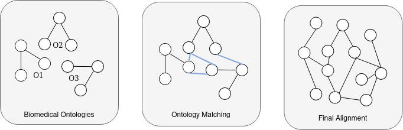
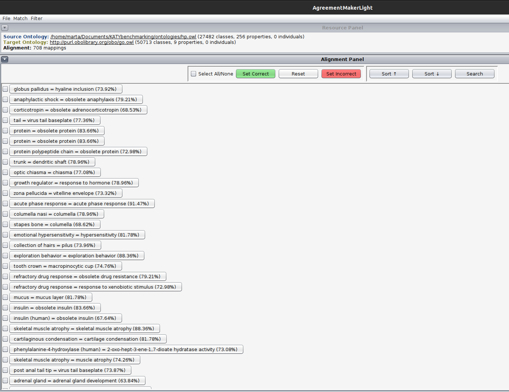
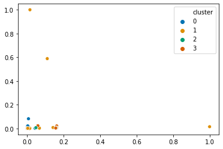
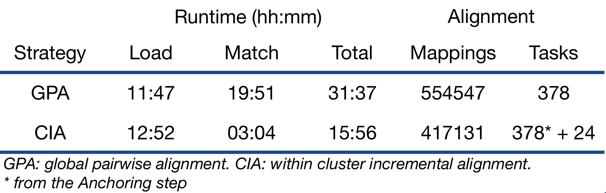

Motivation
Data-centric approaches have taken the forefront in biomedical research, driven by the increasing availability of multi-domain biomedical data.
Ontologies provide context to data and are critical to enable interoperability, but there are hundreds of biomedical ontologies with overlapping domains. As they represent different points of view across several domains, their overlap can be found through ontology matching.
Ontologies
Structured representations of concepts and relationships.
Provide the semantic context onto which data is embedded, and enable interoperability by serving as standards for describing data.

Ontology Matching
Interconnects ontologies through an alignment relating their entities.
Typically focuses on finding equivalent entities between two ontologies.
Holistic OM
Extension of ontology matching for multiple ontologies resulting in a collective alignment.
Usually done by combining pairwise alignments, which is not scalable.

AgreementMakerLight (AML)
Top performing ontology matching system from the Ontology Alignment Evaluation Initiative over the last nine years.
Can only match pairs of ontologies and cannot integrate them.

Objective
Develop a scalable approach to holistic ontology matching and implement it in AML.
Our approach
AML, like other state-of-the-art OM systems is prepared solely to produce alignments between two ontologies, and lacks the functionality of integrating two ontologies through their alignment, which is critical to enable a pairwise matching strategy to be applied incrementally to holistic matching.
Our holistic matching strategy, Clustering Incremental Alignment (CIA) is geared to tackle multi-domain matching problems where the overlap between some ontologies might be small or even non-existent.
Anchoring
Initial step for all pairwise combinations of ontologies using linear-time matching algorithms.
Determines the overlap between all ontologies with a high degree of confidence.
Faster than performing a full pairwise matching strategy.

Spectral Clustering
Uses affinity matrix from Anchoring step as input.
Defines groups of ontologies with higher levels of overlap and therefore likely within the same sub-domain.

Incremental Matching
Matching process starts with the pair that has the greatest overlap.
Resulting merged ontology is matched against the next ontology in the cluster, and so on until all ontologies in the cluster have been matched.

Results
We used a catalogue of 28 biomedical ontologies to run through both the state-of-the-art pairwise approach and our CIA strategy. The time each phase took was calculated, as well as the total number of tasks run and mappings produced.

- Our approach successfully matched the 28 biomedical ontologies into a single knowledge graph.
- It decreases the runtime by almost 50%, making progress in addressing the issue of scalability.
Next steps...
- Ensure the produced alignment is correct and coherent, by performing an expert-based validation study over a set of selected mappings.
Authors
Marta Contreiras Silva
LASIGE, Faculdade de CiênciasDaniel Faria
LASIGE, Faculdade de Ciências
Catia Pesquita
LASIGE, Faculdade de CiênciasFunding
This work was supported by FCT through the LASIGE Research Unit (UIDB/00408/2020 and UIDP/00408/2020). It was also partially supported by the KATY project which has received funding from the European Union’s Horizon 2020 research and innovation program under grant agreement No 101017453.